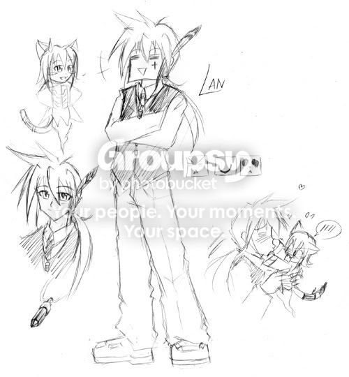

มาลงผลโหวต
รักแบบหนุ่มสาวธรรมดา แต่ถ้าตัวละคร ญ เยอะก็Y(uri)ละกัน=w=
อ้อ รั่วด้วยยิ่งดี
รักแบบหนุ่มสาวธรรมดา แต่ถ้าตัวละคร ญ เยอะก็Y(uri)ละกัน=w=
อ้อ รั่วด้วยยิ่งดี
http://eco.froztic.in.th/archive/ecofanclub/
http://eco.froztic.in.th/archive/ecofanclub/viewtopic.php?f=21&t=31997


Avaritia เขียน:เอ ท่านโนครับ ยังสมัครได้อยู่ไหมเอ่ย? ^ ^"
ใบสมัคร
1.ชื่อ : Lan(แลน)
2.เพศ : ชาย
3.เผ่าพันธุ์ : มนุษย์
4.นิสัย :ใจดี สุภาพบุรุษ(จนโดนชาวบ้านมองว่า"ม่อ"โดยที่เจ้าตัวไม่ได้ตั้งใจ)เฮฮาจนเข้าข่ายรั่ว เป็นมิตรกับทุกคน โดนหลอกง่าย
5.น้ำหนัก52ส่วนสุง168กรุ๊ปเลือดAB
6.สิงที่ชอบ : แมวเนโกะมาตะ(โดยเฉพาะตัวที่เลี้ยง ถึงกับตั้งชื่อว่า"Koibito"ซึ่งแปลว่า"คนรัก"จึงมักจะปฏิบัติกับโคอิจังแบบแฟนเสมอ) ขนมหวาน
7.ความสามารถ : รั่วทุกสถานการณ์ พูดภาษาแมวได้ เลียนแบบเสียงคนอื่นได้
8.อาวุธ : ดาบสองมือ Board swond หน้ากากเปลี่ยนสีหน้าตามคนใส่(ไอ้นี่จัดเป็นอาวุธ?)
9.ประวัติส่วนตัว : แลน เป็นคนธรรมดาที่เคยใฝ่ฝันอยากเป็นผู้กล้า แต่หลังจากที่รู้ว่าหนทางผู้กล้ามันยากลำบาก เขาจึงกลายเป็นแค่นักดาบต๊อกต๋อยที่มีชีวิตไปวันๆ จากการที่่ไม่อยากเป็นผู้กล้า ทำให้เขาเลือกที่จะทำประโยชน์ให้สังคมทุกวิธีทางนั่นเอง จึงทำให้เขาโดนคนไม่ดีหลอกได้ง่าย แต่ถึงกระนั้น เขาก็ยัง"ยิ้ม"เสมอ(ใส่หน้ากากแป๊ะยิ้มนี่หว่า...) ต่อมาได้เลี้ยงโคอิจังซึ่งได้ช่วยคอยเตือนแลนได้หลายๆอย่าง
Koibito(โคอิจัง) เนโกะมาตะ(Momo)ที่แลนได้มาเลี้ยง เป็นเนโกะที่หลงรักแลนเกินกว่าฐานะ"คนเลี้ยงกับสัตว์เลี้ยง" แต่เจ้าตัวมักจะทำตัวหยิ่งเสมอเวลาแลนแสดงความรักใส่(ซึนเดเระ?)แต่เวลาเห็นแลนทำสุภาพบุรุษกับผู้หญิงอื่นจะแสดงอาการ"หึงออกนอกหน้า"
รูปวาดครับ
ถ้าไม่ได้ไม่เป็นไรนะครับ และจะพยายามออนเกมส์นะครับ ตอนนี้ติดไวรัสเลยเล่นด้วยไม่ได้ ^ ^"
ตัวละครของคุณ : Inada_Mari เขียน:ใบสมัคร
1.ชื่อ : Inada Mari(อินาดะ มาริ)
2.เพศ : หญิงซิ -3-
3.เผ่าพันธุ์ : titania
4.นิสัย : นิสัยภายนอกจะดูต๊องๆ เพี้ยนๆ แต่ภายในเป็นคนอ่อนไหวกับเรื่องเศร้าได้ง่ายมากๆ
5.น้ำหนัก/ส่วนสุง/กรุ๊ปเลือด : 52/168/A
6.สิงที่ชอบ : ที่ชอบมากๆก็คงเป็นชอคโกแลตมีใครบางคนให้มา(คงจะรู้กันอยู่เนอะ) แต่ที่เกลียดเข้าใส้สุดๆก็คงจะเป็ผม่างๆ(เห็นทีเป็นต้องสลบเหมือดคาที่- -)
7.ความสามารถ : พิณฟ้าลงทันฑ์-คว้าพิณที่ถืออยู่ฟาดลงที่เป้าหมายเต็มแรง(จริงๆมันก็แค่เอาพิณเคาะหัวนั่นแหละ- -)
เสียงร้องส่งวิญญาณ-ตะโกนร้องออกมาด้วยน้ำเสียงที่ดังก้อง คนที่ได้ยินอาจจะหูอื้อ(ติดดStun+Confuse)แต่ความจริงมันก็แค่ร้องกรี๊ดออกมาดังๆแค่นั้น(แต่เสียงดังนรกแตกมากๆ- -)
Sonata of Haven-ขับร้องด้วยน้ำเสียงอันไพเราะราวกับได้ฟังเพลงของพระเจ้า คนที่ได้ฟังเพลงนี้แล้วจะทำให้หลับไหลไประยะหนึ่ง ถึงแม้คนที่ไม่ง่วงแต่ถ้าได้ยินเพลงนี้ก็หลับได้
8.อาวุธ : พิณสวรรค์(พิณเวล80นั่นแหละแต่มีรูปปั้นนิมพ์น้อยๆติดอยู่ด้วย)
9.ประวัติส่วนตัว : เป็นกวีสาวน้อยพเนจรความจำเสื่อมที่ร่อนเร่มากว่า5ปี ตอนที่รู้สึกตัวตอนแรกก็อยู่ที่ริมแม่น้ำที่หนึ่ง(แถวไหนก็ม่ะรุ ตามใจคนแต่งละกัน)แต่จริงๆแล้วเธอหนีจากเงื้อมมือคนกลุ่มหนึ่งที่ต้องการพิณที่เธอนั้นได้ครอบครองไว้